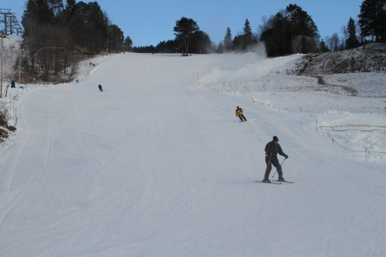
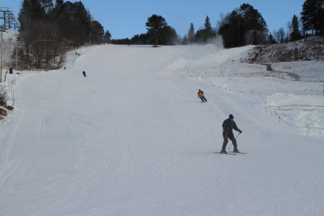
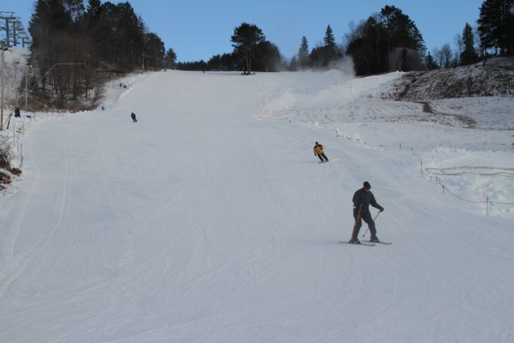

Here you will be able to see all the beautiful hills we have to offer.
Ranging from beginner to advanced.
Beginner Hills

"This is our first beginner hill, it was made to learn on. This is a great place to enjoy the amazing views our park has to offer. This hill offers a very easy-going slow to medium speed based path.
"Slopes 200 km, Ski routes 50 km, Elevation difference 1609 m (Base 675 m - Mountain 1367 m), Ski lifts no.
54.
This hill is the stepping stone's building up to biggers hills, this makes hills it easy to learn how to build up speed and learn how to stop yourself.
"Slopes 160km, Ski routes 180 km, Elevation difference 1609 m (Base 675 m - Mountain 1300 m), Ski lift: yes, Number of lifts: 1
105.
The first real hill that you can start to get a grip on a full-size hill. This hill is full of big slopes and mellow free flowing parts, lots of side paths into the woods you can follow down or take the main path.
"Slopes 270 km, Ski routes 110 km, Elevation difference 1609 m (Base 675 m - Mountain 1740 m), Ski lift: yes, Number of lifts: 5
143.